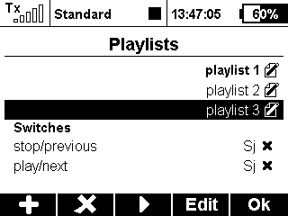
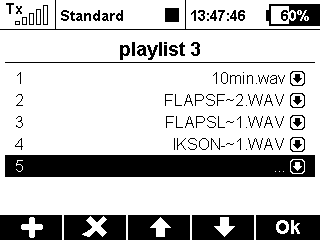

Mit dieser App können Wiedergabelisten erstellt und wiedergegeben werden.
Die Hauptseite zeigt eine Liste aller erstellten Wiedergabelisten und eine Auswahl für die Start- und Stopschalter.
Mit diesen Schaltern kann durch die aktive Wiedergabeliste navigiert werden.
 
erstelle mit F(1) eine Wiedergabeliste und bennene sie
die fokussierte Wiedergabeliste wird mit F(4) zum Bearbeiten ausgewählt
tausche, lösche und füge neue Dateien hinzu
die aktive Wiedergabeliste kann mit F(3) gewählt werden
wenn das Ende einer Wiedergabeliste erreicht ist, springt der Player wieder an den Anfang